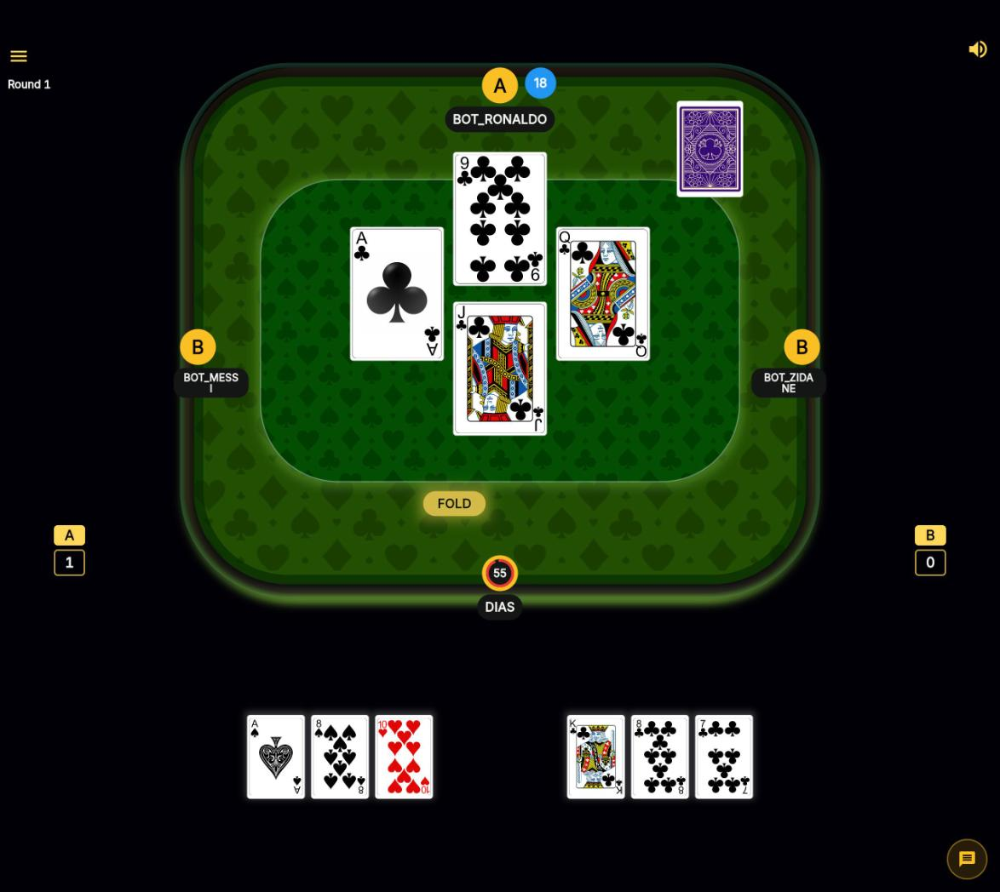
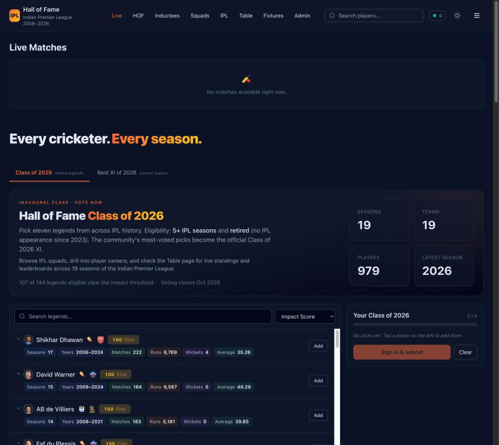

I design the schema, the service architecture, and the hard parts by hand — then direct AI coding agents to complete implementation. Both of these are live, production systems, not demos.
Designed and built a real-time multiplayer platform for "28" (Twenty-Eight), an Indian trick-taking card game popular in Kerala, played by 4 players in fixed partnerships. I personally built the game engine, service architecture, and database schema, then directed AI coding agents to complete implementation across a 35,000+ line, three-service production codebase.

Designed and built a full-stack cricket data and live-scoring platform covering 19 IPL seasons, 800+ players, live match scores, and fan voting. I personally designed the PostgreSQL schema, data pipelines, and core ranking algorithm, then directed AI coding agents to complete implementation across a 16,000+ line codebase spanning data pipelines, API, and frontend.

The AI-assisted workflows I rolled out for a 9-person engineering team are the same ones I use to ship these solo. I don't ask a team to adopt tooling I haven't stress-tested myself.